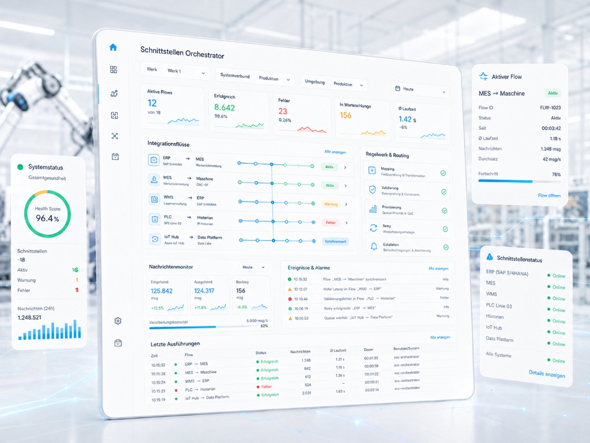

SAP · Microsoft D365 · OPC UA · API-Gateway
HI-Tech Solutions
Der Schnittstellen-Orchestrator verbindet Ihre IT-Systeme (ERP, MES, WMS) nahtlos mit Ihren Shopfloor-Systemen (SPS, OPC UA, Edge). Behalten Sie in Echtzeit den Überblick über Datenflüsse, Validierungsregeln und Systemverbindungen.

−80%
Setupzeit für neue Schnittstellen
Durch vorkonfigurierte Konnektoren und grafisches Drag-and-Drop Mapping statt individueller Programmierung.
99.9%
Datenverfügbarkeit & Pufferung
Lokales Buffering sichert den Datenfluss und verhindert Datenverluste, selbst wenn das ERP vorübergehend offline ist.
<1.0s
Latenz im Datenfluss
Echtzeit-Synchronisation ermöglicht sofortige Rückmeldungen und direkte Reaktionen im Shopfloor.
Produkt-Vorschau
Überwachen Sie Datenströme live, konfigurieren Sie neue Datenverbindungen grafisch und steuern Sie Fehlerszenarien direkt per Klick aus. Wechseln Sie durch die drei Ansichten.
Bedeutung von Orchestrierung
Eine moderne Fertigung besteht aus dutzenden Systemen, die Daten austauschen. Unkoordinierte Punkt-zu-Punkt-Schnittstellen führen bei Systemausfällen unweigerlich zu Produktionsstillständen. Unser Orchestrator schafft Stabilität.
Fällt das ERP-System wegen Wartungsarbeiten aus, puffert der Schnittstellen-Orchestrator alle Rückmeldungen der SPS-Maschinen im lokalen Puffer. Sobald das ERP wieder online ist, werden die Daten automatisch und geordnet übertragen – kein Datenverlust.
Systeme sprechen unterschiedliche Protokolle (JSON, XML, SOAP, RFC). Die Mapping-Engine konvertiert Datenpakete vollautomatisch und validiert sie gegen das Zielschema. Neue Felder können ohne eine einzige Zeile Programmiercode verknüpft werden.
Wo klemmt der Datenfluss? Statt Logs auf fünf Servern zu durchsuchen, zeigt der Orchestrator alle Integrationsflüsse auf einem Dashboard. Fehlerhafte Payloads werden farblich markiert und können direkt im Interface analysiert und korrigiert werden.
Konnektieren Sie SPS-Maschinen über sichere, read-only OPC UA Verbindungen. Der Orchestrator übersetzt die proprietären Binärsignale in standardisierte IT-Datenformate und schützt Ihre Steuerungstechnik vor externen Netzwerkangriffen.
Leistungsumfang des Orchestrators
Der HI-Tech Solutions Schnittstellen-Orchestrator ist speziell für die raue, heterogene Umgebung moderner Fertigungshallen konzipiert. Schnell einzurichten, hochgradig ausfallsicher.
Integrierte Verbindungsadapter für SAP, Dynamics 365, OPC UA, MQTT, SQL und REST-APIs.
ERP · SPS · DatenbankenDefinieren Sie Routing-Regeln, Dead-Letter-Queues und Wiederholungen (Retry) komfortabel per GUI.
Routing · FehlerhandlingBauen Sie Integrationspfade grafisch auf. Verknüpfen Sie Datenquellen und Transformationsschritte per Maus.
Graph-Editor · Drag & DropLückenloser Audit Trail über jedes übertragene Paket. Schnelle Problemlösung durch grafische XML/JSON Diffs.
Audit Trail · Live LoggerNächster Schritt
In einem 30-minütigen Quick Check zeigen wir Ihnen, wie Sie mit unserem Orchestrator die Datenströme in Ihrer Produktion lückenlos steuern und vor Ausfällen schützen können.